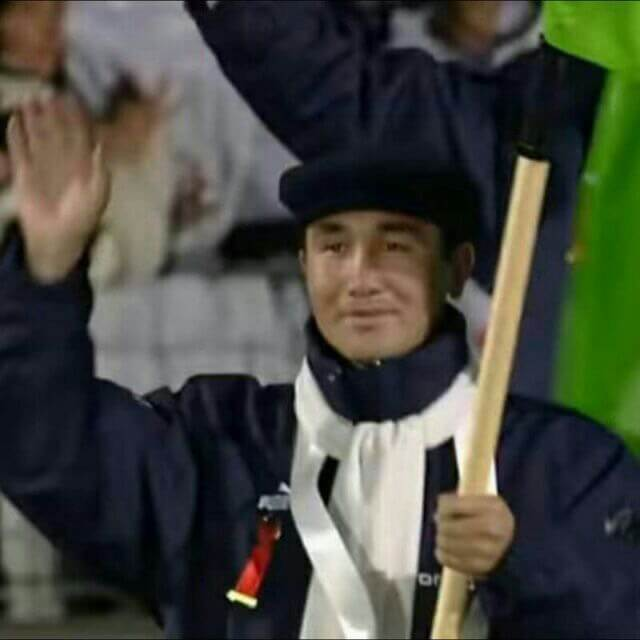
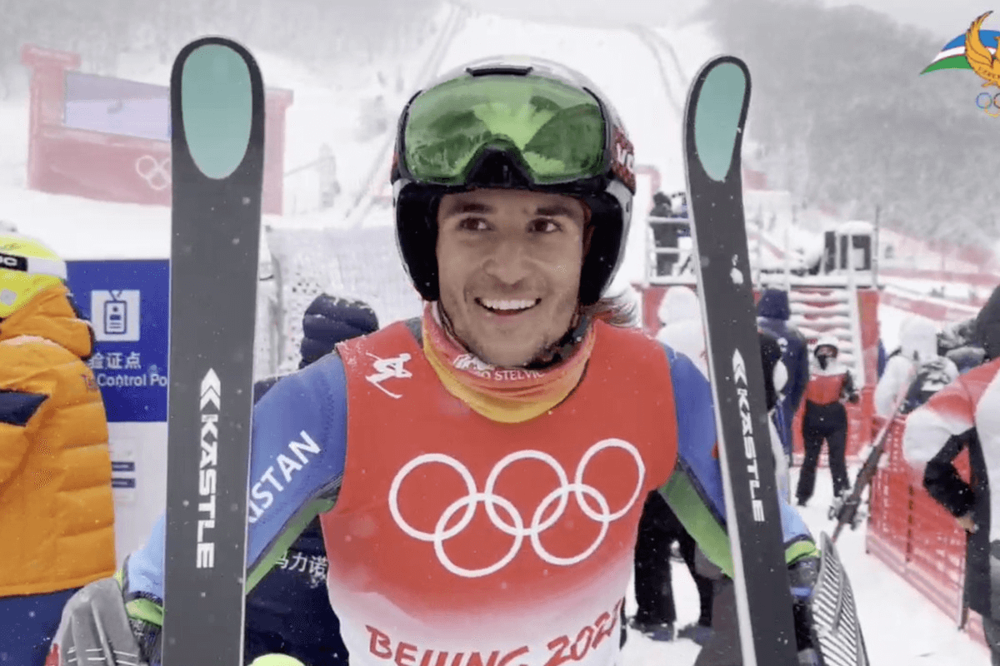
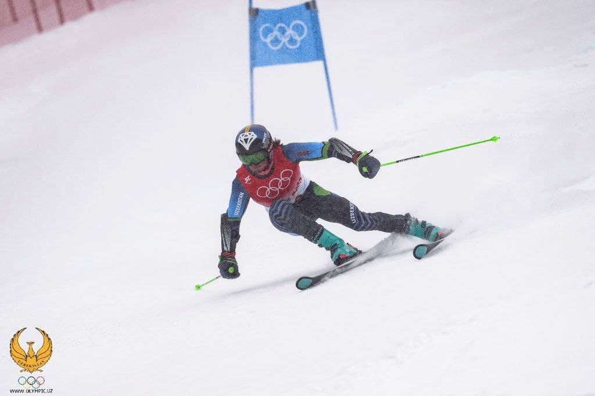

История горнолыжного спорта в Узбекистане
Камиль Урунбаев родился 7 сентября 1976 года в Бостанлыкском районе
Ташкентской области.
Выступал в горнолыжном спорте.
В 1998 году вошёл в состав сборной Узбекистана на зимних Олимпийских играх в Нагано. Участвовал в слаломе. В
первом заезде показал 35-й результат — 1 минута 9,55 секунды, во втором заезде стал 28-м — 1.09,30. По сумме
двух заездов (2.18,85) занял 28-е место среди 50 участников, уступив 29,54 секунды чемпиону — норвежцу Хансу
Петтеру Буросу.
В 2002 году вошёл в состав сборной Узбекистана на зимних Олимпийских играх в Солт-Лейк-Сити. Участвовал в
слаломе. В первом заезде показал 49-й результат — 1.04,09, а второй не завершил и остался без места в итоговом
протоколе.
Урунбаев был знаменосцем сборной Узбекистана на церемониях открытия обеих Олимпиад. Кроме того, он — первый
узбекистанский горнолыжник, выступавший на Олимпийских играх: в 1994 году в Лиллехаммере республика была
представлена только в фигурном катании и фристайле.
В 1999 году участвовал в зимних Азиатских играх в Канвондо, где занял 7-е место в слаломе (2.05,12) и уступил
10,12 секунды победителю — южнокорейцу Хур Сын Уку. В слаломе-супергиганте занял 8-е место (1.33,99), отстав
на 7,16 секунды от также выигравшего эту дисциплину Хур Сын Ука. Кроме того, выступал в гигантском слаломе, но
не закончил второй заезд и остался без места.
Кайрат Эрметов родился 23 мая 1984 года в Бостанлыкском районе
Ташкентской
области.
С 2003 года входил в состав сборной Узбекистана по горнолыжному спорту. В феврале 2003 года впервые выступил
на соревнованиях под эгидой Международной федерации лыжного спорта в Японии[1].
В марте 2004 года стал двукратным победителем соревнований в Турции.
В 2005 году участвовал в чемпионате мира в Бормио, где занял 71-е место в гигантском слаломе и не финишировал
во втором заезде слалома.
В 2006 году вошёл в состав сборной Узбекистана на зимних Олимпийских играх в Турине. В слаломе по сумме двух
заездов показал результат 2 минуты 20,88 секунды, заняв 46-е место и отстав на 37,74 секунды от победителя —
Бенджамина Райха из Австрии. Был знаменосцем сборной Узбекистана на церемониях открытия и закрытия Олимпиады.
В 2008 году завершил спортивную карьеру.
Комил Тохтаев родился 30 октября 1997 года в городе Янгиабад Ташкентской
области.
В 2015 году Тохтаев участвовал в гигантском слаломе на чемпионате мира, проходившем в Бивер-Крик (США).
Тохтаев не смог закончить гонку.
Тохтаев был единственным лыжником, представлявшим Узбекистан на зимних Олимпийских играх 2018 года в Пхенчхане
(Южная Корея), где он участвовал в гигантском слаломе.
Oн был единственным участником из Узбекистанa на зимних Олимпийских играх 2022 года в Пекине.



Открытие направление по горнолыжному спорту в Узбекистане
Согласно распоряжению Президента Республики Узбекистан «О мерах по развитию зимних видов спорта» №4583 в 2019
году в Государственном университете физического воспитания и спорта Узбекистана была создана кафедра «Зимние
виды спорта». Начиная с 2020-2021 учебного года начался прием студентов по направлению горные лыжи. На
сегодняшний день по горнолыжному спорту обучаются 4 мастера спорта и 2 кандидата в мастера спорта.
Наши спортсмены приняли участие в Международной зимней универсиаде, проходившей в Лейк-Плэсиде, США, в
январе 2023 года. В Универсиаде приняли участие более 1443 спортсменов, представляющих 43 национальные
студенческие спортивные федерации. Наши спортсмены впервые выступили на этой Универсиаде и показали
достойный результат со спортсменами из стран с приоритетными зимними видами спорта и национально развитых
стран. Среди них: Гаюпов Арман, Назаров Медет, Бухарбаев Акил участвовали в горных лыжах, Мирзалиев Эльнур
участвовал в сноуборде.
Кроме того, учатся наши спортсмены, как Турдалиев Бегжигит, Валерия Коволева, Асель Турдимуратова и
другие. Они занимали первые места на многих республиканских чемпионатах и Кубках Азии.
Также наши спортсмены приняли участие в проходившем в Кыргызстане Кубке Центральной Азии, где наши спортсмены
заняли призовые места и оправдали ожидания нашей страны и всех любителей зимних видов спорта. Наши спортсмены
также принимали участие в чемпионате мира во Франции, но медалей, к сожалению, не завоевали. Но в то же время
зимние виды спорта приобрели бесценный опыт борьбы с высокоразвитыми международными спортсменами на
национальном уровне и стали нашей гордостью.